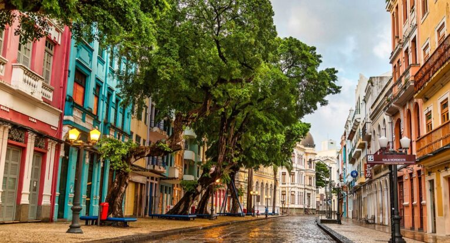

Rua do Bom Jesus
A Rua do Bom Jesus, no Recife Antigoé uma das vias mais antigas e históricas do Brasil, eleita uma das mais bonitas do mundo. Com raízes no século XVII, já foi chamada de Rua do Bode e Rua dos Judeus, abrigando a primeira sinagoga das Américas, a Kahal Zur Israel.
